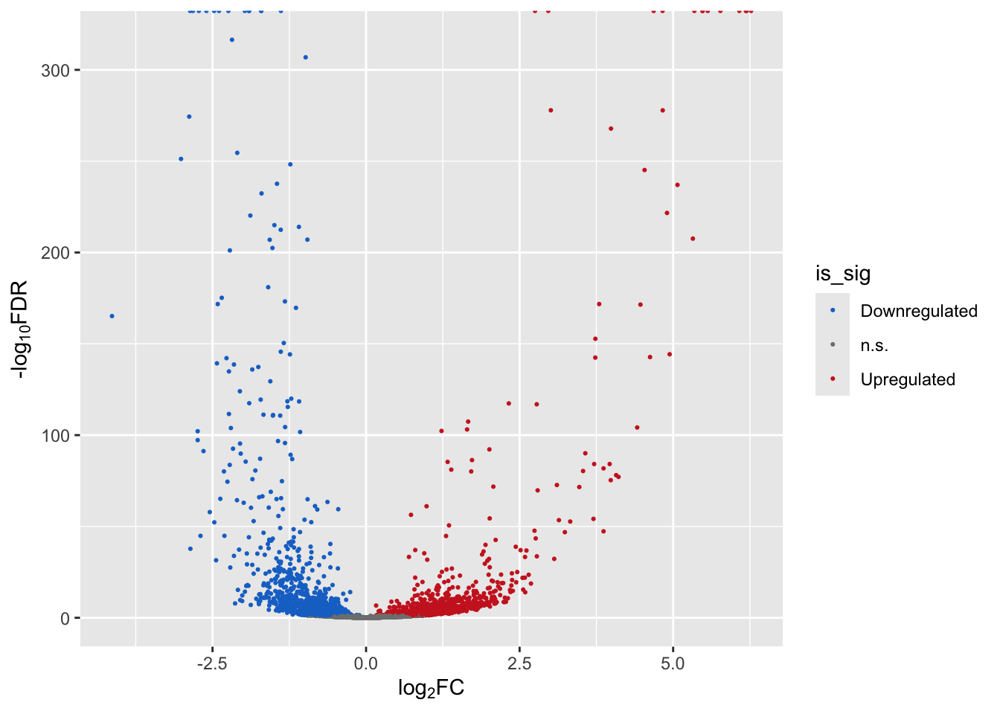

Module 4: Bonus Exercise Results
if (!requireNamespace("yeastRNASeq", quietly = TRUE))
BiocManager::install("yeastRNASeq")
library(yeastRNASeq)
data(geneLevelData)
# only keep genes with cpm > 25 in more than two samples
# table of TRUE/FALSE values
genes_passing_cutoff <- cpm(geneLevelData) > 25
# For each gene, add up how many samples it is TRUE in (rowSums())
# Then only keep those strictly greater than 2.
genes_keep <- rowSums(genes_passing_cutoff) > 2
# Finally subset the data
filtered <- geneLevelData[genes_keep,]
# How many genes pass this threshold?
str(filtered)## 'data.frame': 4552 obs. of 4 variables:
## $ mut_1: num 38 31 55 189 33 23 51 50 40 39 ...
## $ mut_2: num 39 33 52 180 41 13 52 48 47 40 ...
## $ wt_1 : num 35 40 47 151 32 73 54 30 14 55 ...
## $ wt_2 : num 34 26 47 180 29 63 45 32 25 70 ...# as.matrix(filtered): the count data in the right class
# phenoData: The sample information
group <- factor(rep(c("Mut", "WT"),each=2),
levels = c("WT","Mut")) # we tell R to use "WT" as the reference
y <- DGEList(as.matrix(filtered),
group = group)
## matrix of experimental design
mod = model.matrix(~group, y)
## Normalize data
y <- calcNormFactors(y, method = "upperquartile")
y <- estimateDisp(y, mod)
fit = glmFit(y, mod)
lrt = glmLRT(fit, coef = 2)
diffEx2 <- decideTests(lrt,
adjust.method="BH",
p.value=0.05
)
table(diffEx2)## diffEx2
## -1 0 1
## 1049 2209 1294## logFC logCPM LR PValue FDR
## snR10 6.268938 11.39811 4545.409 0 0
## YGL088W 6.195050 11.32542 4314.679 0 0
## snR18 6.183593 10.98786 3453.878 0 0
## snR35 6.078012 10.50997 2221.059 0 0
## snR9 5.769437 11.19751 3846.696 0 0
## snR8 5.562905 10.34273 2140.791 0 0## logFC logCPM LR PValue FDR
## snR10 6.268938 11.39811 4545.409 0 0
## YGL088W 6.195050 11.32542 4314.679 0 0
## snR18 6.183593 10.98786 3453.878 0 0
## snR35 6.078012 10.50997 2221.059 0 0
## snR9 5.769437 11.19751 3846.696 0 0
## snR8 5.562905 10.34273 2140.791 0 0## [1] 2343 5Now merge the DEG and table with the table with the table that has the up/downregulated status:
# needed to use merge function
diffEx2 <- as.data.frame(diffEx2)
# give column more intuitive name
colnames(diffEx2)[1] <- "gene_status"
# add the common "gene" column to merge the two tables
diffEx2$gene <- rownames(diffEx2)
DEGS$gene <- rownames(DEGS)
mega <- merge(x = DEGS, y = diffEx2, by="gene")Assign the column name for gene status:
is_sig <- rep("n.s.", nrow(mega)) # default is ns
is_sig[which(mega$gene_status > 0)] <- "Upregulated"
is_sig[which(mega$gene_status < 0)] <- "Downregulated"
# use levels() to tell R how to order the categorical
# variables. Downregulated = 1, n.s.=2, and Upregulated=3.
# By default, R orders categorical variables alphabetically,
# which may not make sense!
mega$is_sig <- factor(is_sig,
levels = c("Downregulated","n.s.","Upregulated"))Finally create the volcano plot:
p1 <- ggplot(mega,
aes(x = logFC, y = -log10(FDR))) + # -log10 conversion
geom_point(aes(color=is_sig),size = 2/5) +
xlab(expression("log"[2]*"FC")) +
ylab(expression("-log"[10]*"FDR")) +
scale_color_manual(
values = c("dodgerblue3", "gray50", "firebrick3"))
p1